Tepi 2.6.1
Dynamic island dan Dock untuk Windows.
Island di tepi atas untuk lagu, pesan, dan agent coding. Dock di tepi bawah untuk aplikasi, dan bisa menggantikan taskbar.
Tepi tersedia untuk Windows 10 dan 11, serta Android 10 ke atas.
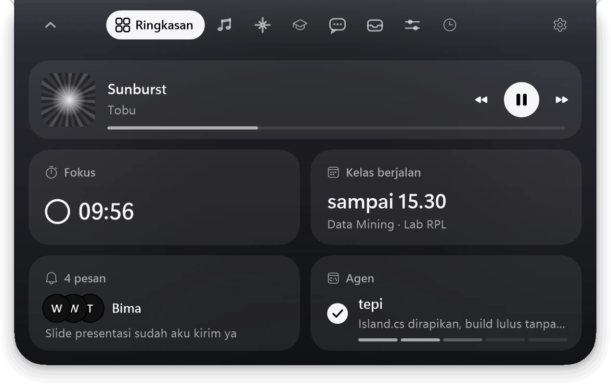
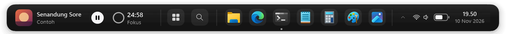
Island
Hidup saat dibutuhkan.
Sembilan belas aktivitas, dari lirik yang menyapu kata demi kata sampai kode OTP dari HP. Island membesar sebentar, lalu kembali tenang.
Panel
Sebelas halaman, satu gerakan.
Arahkan kursor ke island dan panel terbuka. Scroll memindahkan halaman, dan kartu Ringkasan bisa kamu pilih dan urutkan sendiri.
RingkasanYang paling penting, di satu tempat
Letak
Di mana pun kamu taruh.
Atas tengah, pojok atas, atau berdiri tegak di sisi kiri dan kanan layar. Menempel di tepi seperti notch, atau mengambang sedikit di bawahnya. Saat diam, jam, tanggal, baterai, atau suhu bisa ikut tampil di sampingnya.
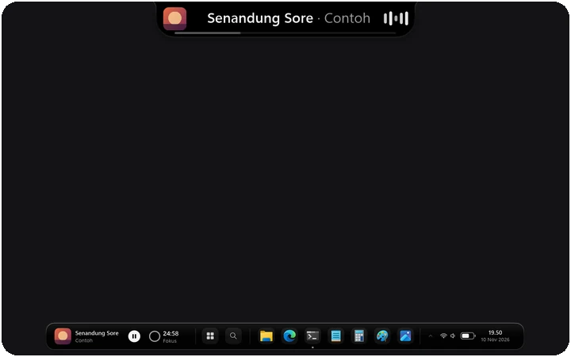
Atas tengah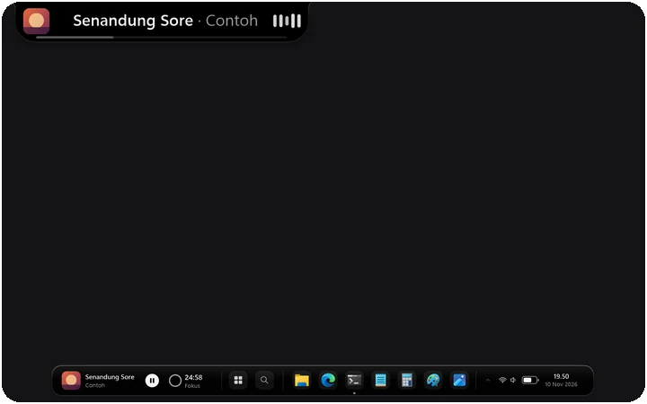
Pojok atas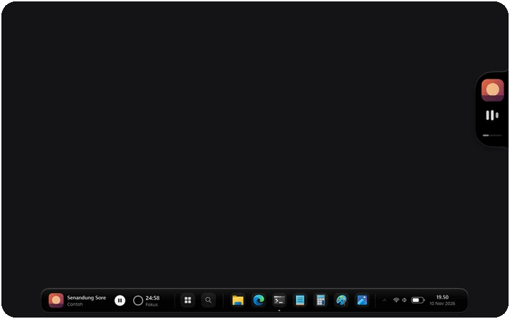
Sisi kanan
Mengecil saat kamu fokus.
Island menyusut jadi sliver kecil yang tembus klik, jadi tab browser di bawahnya tetap bisa diklik. Mode Otomatis menyusut saat browser dimaksimalkan atau setelah island diam semenit. Pemberitahuan penting tetap muncul.
Dua matanya berkedip, mengikuti kursor, dan berekspresi.
Dock
Tepi bawah juga.
Aplikasi yang disematkan dan yang sedang terbuka, pratinjau jendela, lalu widget lagu, timer, cuaca, dan CPU di satu bar. Ikon membesar mengikuti kursor dan bisa diseret untuk mengurutkan.
Ganti taskbar Windows
Satu sakelar di Pengaturan › Dock memindahkan Start, tray, dan jam ke Dock, dan tombol Windows membuka kartu milik Tepi. Matikan lagi, taskbar kembali seperti semula.
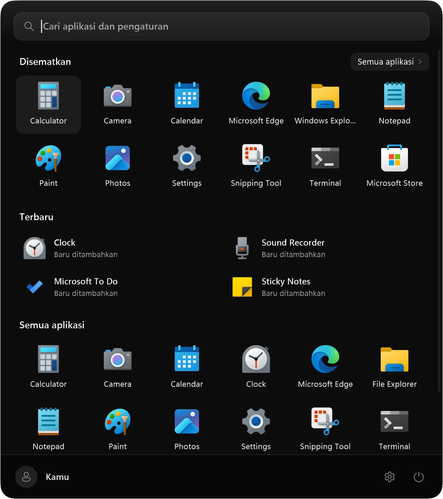
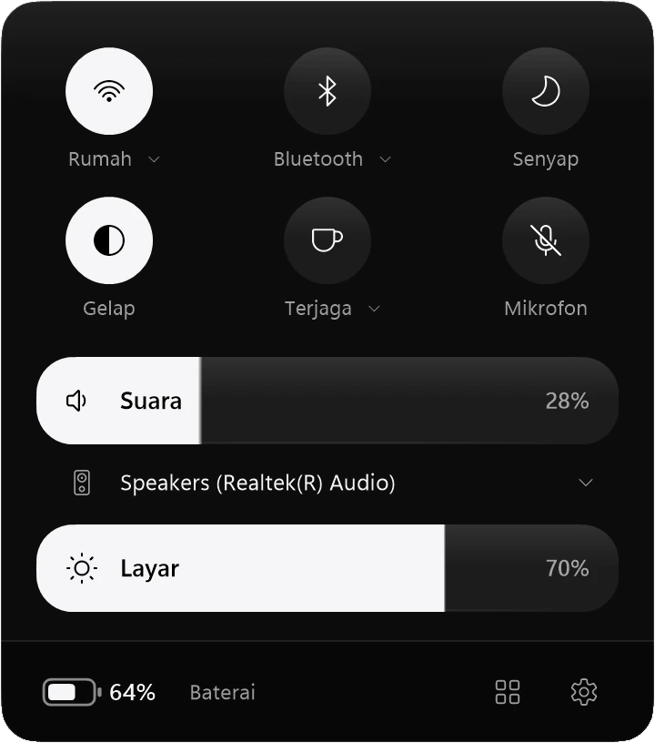
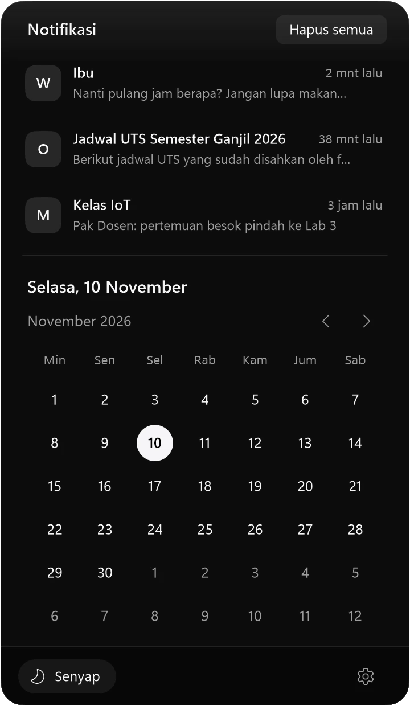
- Pratinjau jendela langsung
- Seret ke atas untuk melepas sematan
- Jatuhkan berkas ke ikon untuk membukanya
- Sembunyi otomatis atau saat tertutup jendela
- Win+T memilih aplikasi dengan keyboard
Bicara dan AI
Bicara, biar Tepi yang mengetik.
Dikte, transkrip rapat, dan Suruh Tepi ada di satu tab. Layanan AI-nya kamu pilih sendiri, dan dikte bisa jalan offline.
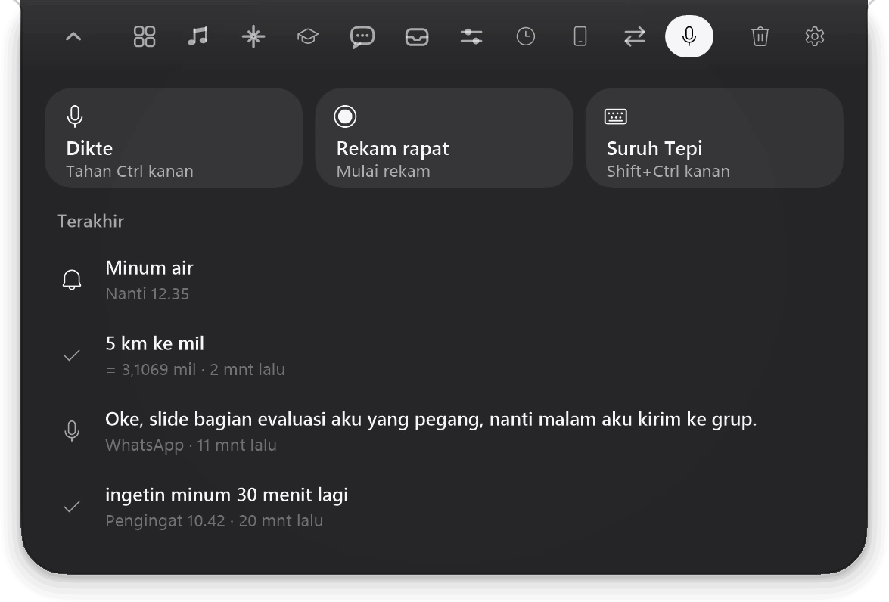
- DikteTahan Ctrl kanan di aplikasi apa pun, bicara, lalu lepas. Teksnya ditempel di tempat kursor, dengan kamus istilah dan snippet.
- Suruh TepiKetik atau ucapkan "ingetin minum 30 menit lagi" atau "timer 5:30". Pengingat, timer, catatan, dan hitungan jalan tanpa internet, dan obrolannya diingat.
- Transkrip rapatCtrl+Alt+T merekam panggilan tanpa bot. Mikrofon jadi Kamu, suara laptop jadi Lawan bicara, lengkap dengan ringkasan dan to-do.
- Perbaiki dan terjemahkanBlok teks di aplikasi apa pun, tekan pintasannya, dan teksnya diganti versi yang sudah diperbaiki atau diterjemahkan.
- AI pilihanmuGroq, OpenAI, Claude, Gemini, OpenRouter, DeepSeek, Mistral, Ollama atau LM Studio di laptop sendiri, atau server sendiri. Dikte juga bisa offline dengan whisper.cpp.
Agent coding
Agent coding, selalu kelihatan.
Claude Code, Codex, Antigravity, dan Copilot CLI. Island menampilkan agen yang sedang bekerja, rencana kerjanya langkah demi langkah, dan ringkasan saat selesai.
Contoh permintaan: Claude minta izin mengubah Island.cs, dua baris diganti tiga baris.
Izin dijawab dari island
Permintaan izin tampil utuh dengan diff berwarna. Izinkan, Selalu, atau Tolak tanpa pindah ke terminal. Perintah berisiko selalu ditanya ulang.
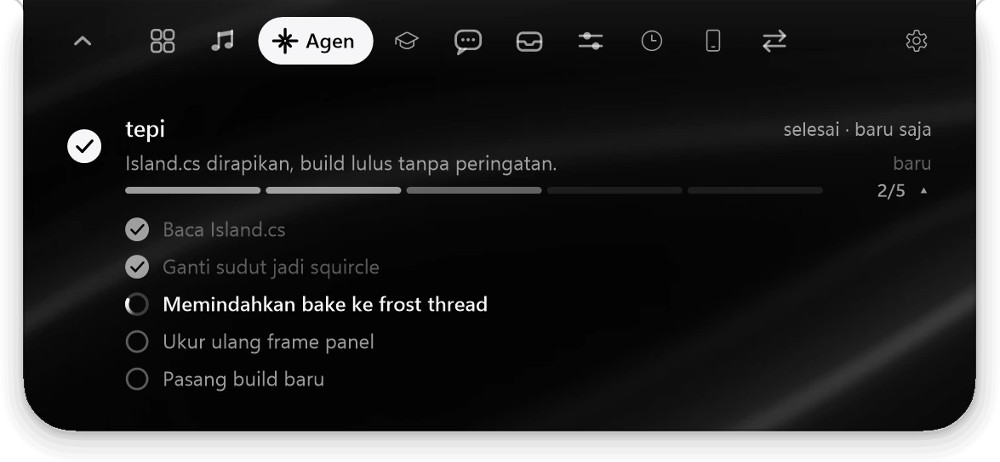
Rencana kerja
TodoWrite, update_plan, dan write_todos tampil sebagai bar bersegmen dan daftar langkah.
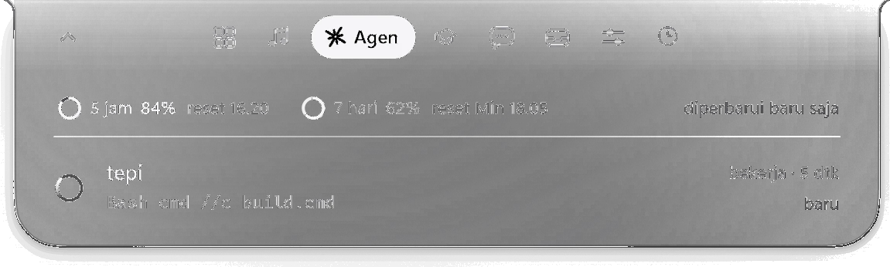
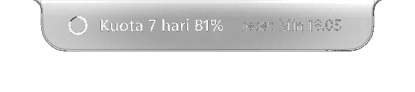
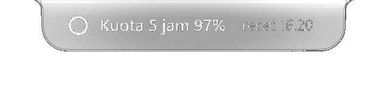
Kuota agent AI
Kuota Claude, Codex, Antigravity, dan Copilot dalam satu daftar: sisa batas 5 jam dan 7 hari beserta jam reset, dengan peringatan di 80% dan 95%.
Sehari-hari
Alat kecil yang sering terpakai.
Berkas
- RakSeret berkas ke island, juga ke sliver Mini, lalu seret lagi ke aplikasi lain.
- Ubah formatGambar, video, audio, dokumen, PDF ke Word, OCR, kompres, dan gabung PDF. Semuanya di laptop ini.
- ScreenshotPreview di island, lalu samarkan, potong, putar, atau salin teks di dalamnya.
- Rapikan DownloadsBerkas lepas dipindah ke folder per jenis, dan bisa diurungkan selama satu jam.
- Unduhan dan flashdiskProgres unduhan dari Chrome, Edge, Firefox, Brave, dan Opera. Flashdisk dibuka atau dikeluarkan dari island.
Waktu dan tugas
- Timer dan stopwatchFokus 25 atau 50 menit, timer bebas, dan stopwatch dengan putaran. Progresnya menyala di tepi island.
- Tugas dan jadwalKulia, Notion, Todoist, dan kalender iCal jadi satu, dengan pengingat tenggat.
- PengingatJadwal sholat dihitung tanpa internet, ibadah sendiri, minum, istirahat mata 20-20-20, dan peregangan.
- CuacaSuhu di Ringkasan dan peringatan sebelum hujan turun, dari Open-Meteo.
- Catatan kilatCtrl+Alt+N, satu baris, Enter. Masuk ke Rak, Todoist, atau Notion.
Pesan dan panggilan
- PesanWhatsApp, Telegram, Discord, Teams, Slack, dan email. Klik pesan untuk langsung membuka chat pengirimnya.
- Satu pesan, satu bannerTepi bisa jadi penerima utama banner chat dan panggilan, jadi pesan dari HP dan laptop tampil sekali.
- Mode rapatSaat Zoom, Meet, atau Teams memakai mikrofon, island menampilkan lama panggilan dan tombol mute.
- Berbagi layarSelama berbagi layar, island keluar dari tangkapan dan isi pesan disamarkan.
- Ringkasan setelah fokusPesan biasa ditahan selama sesi fokus, lalu dirangkum saat selesai.
- Cermin kameraCtrl+Alt+C untuk melihat dirimu sebelum kelas atau rapat. Kamera dilepas sendiri setelah 2 menit.
Sistem
- KontrolVolume per aplikasi, kecerahan, Wi-Fi, Bluetooth, Gelap, dan Terjaga di satu tab.
- Aktivitas sistemCaps Lock, bahasa input, login Wi-Fi kampus atau hotel, baterai earbuds, dan mikrofon yang dimatikan.
- Pintasan bebasSetiap pintasan bisa diganti atau dikosongkan. Yang bentrok dengan aplikasi lain langsung ditolak.
- Aturan per aplikasiPilih aplikasi yang membuat island menyingkir atau menahan notifikasi saat jendelanya di depan.
- SkripToast dan bilah progres dari skrip apa pun lewat
Tepi.exe --notify, dan perintah panjang lewat--run. - Keyboard dan pembaca layarCtrl+Alt+I untuk navigasi. Toast, tab, tombol, dan permintaan izin dibacakan Narrator atau NVDA.
Tampilan
Gayamu sendiri.
Liquid Glass yang membaca latar di belakangnya, Frost yang lebih berkabut, atau Hitam yang paling hemat daya. Tema gelap, terang, atau ikut Windows, aksen dari sampul album atau warna sendiri, dan paket tema dengan lambang, maskot, serta suara sendiri.


Jendela
Jendela yang serasi.

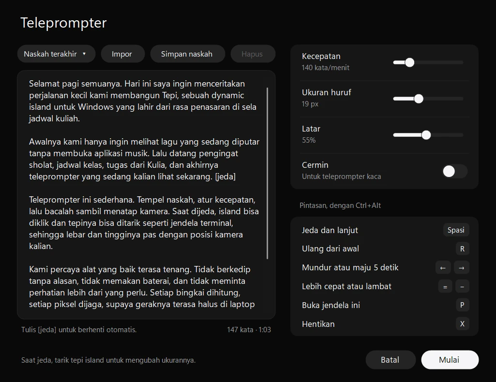
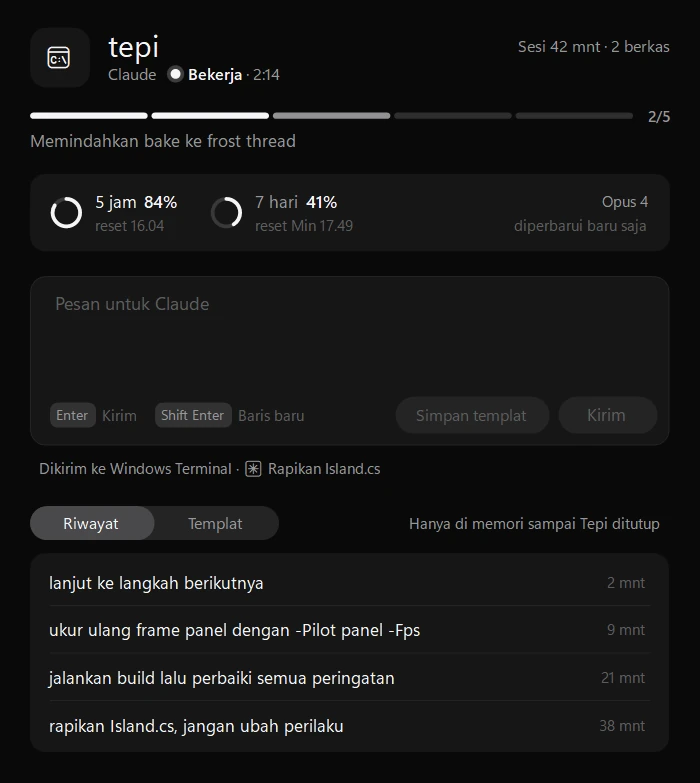
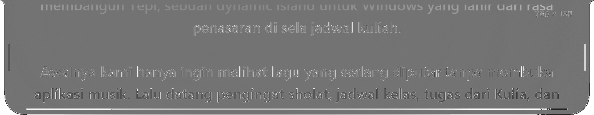
Performa
Ringan seperti kapas.
Island tidak menggambar apa pun selama tidak ada yang bergerak. Kaca hanya membaca layar saat latar di belakangnya berubah.
0,2%
CPU saat diam
1.7.0 1,9%
-
1,8%
CPU saat timer berjalan di island
-
0,4%
CPU saat panel terbuka, rata-rata semua tab
1.7.0 7,3%
-
13 MB
Memori di Task Manager
1.626 KB satu file exe, tanpa instalasi.
Membuka panel dan pindah tab rata-rata 4–7 ms per frame, paling lama 14 ms, di bawah 16,7 ms untuk 60 fps.
Diukur 5 November 2026 di laptop Intel Core i3-1115G4 dengan data asli: tiap kondisi dibiarkan tenang 4 detik, lalu diukur 8 detik. Persen CPU dihitung terhadap satu core.
Tepi Android
Island-nya juga ada di HP.
Untuk Android 10 ke atas, di sekitar kamera depan. Nyambung ke laptop cukup pindai QR.
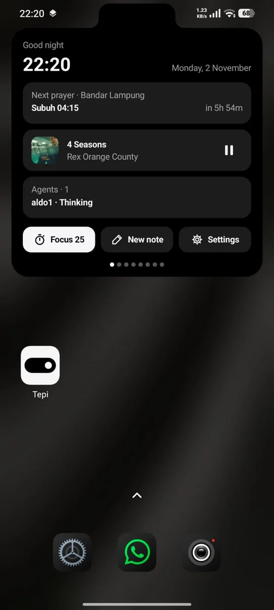
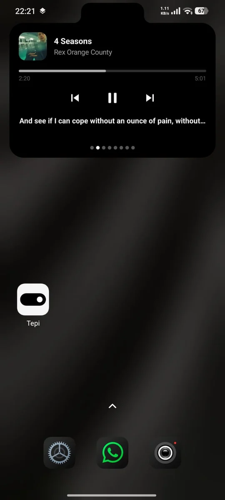
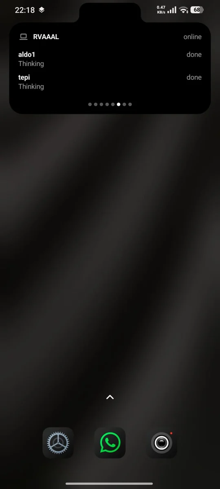
- Kode OTP dan berkas langsung ke laptop
- Minggir sendiri saat aplikasi bank dibuka
- Tanpa server, cukup Wi-Fi yang sama
Privasi dan keamanan
Tetap di laptopmu.
- Layanan luar seperlunyaLRCLIB untuk lirik dan GitHub untuk cek versi, keduanya bisa dimatikan. Layanan AI, cuaca, Kulia, Notion, Todoist, dan kalender hanya dihubungi kalau kamu memilih atau menghubungkannya.
- Suara bisa tetap di laptopDengan mesin offline, rekaman dikte dan rapat tidak keluar dari laptop. Rekaman dibuang setelah teksnya jadi.
- Key dan token terenkripsiKey layanan AI, token integrasi, dan tautan rahasia disimpan dengan DPAPI dan tidak pernah ditulis ke log.
- Server hook lokalHanya mendengarkan di 127.0.0.1, dengan token acak 48 karakter dan port acak untuk instalasi baru.
- Tidak pernah mengizinkan sendiriKalau Tepi tidak menjawab, agent kembali ke prompt izinnya sendiri. Perintah berisiko tidak bisa diizinkan untuk selamanya.
- Setelan Windows dikembalikanGanti taskbar dan penerima utama banner mencatat setelan Windows semula, lalu mengembalikannya saat dimatikan atau saat Tepi keluar.
- Konversi di laptopBerkas diubah di laptop ini memakai Windows, atau Word, ffmpeg, LibreOffice, dan Pandoc yang sudah terpasang. Tidak ada yang diunggah.
- Pembaruan terverifikasiExe baru hanya diunduh saat kamu klik Perbarui, lalu SHA-256-nya dicocokkan dengan digest dari GitHub.
- TerbukaKode sumber lengkap di GitHub dengan lisensi MIT.
Satu exe. Gratis.
Sudah memasang Tepi? Klik kanan ikon Tepi, lalu Perbarui ke Tepi 2.6.1. Berikutnya cukup Pengaturan › Tentang › Cek pembaruan.
Tepi tersedia untuk Windows 10 dan 11, serta Android 10 ke atas.
- Syarat
- Windows 10 versi 2004 atau lebih baru, atau Windows 11, 64-bit. .NET Framework 4.8 sudah bawaan Windows.
- SmartScreen
- Exe belum ditandatangani, jadi Windows SmartScreen bisa memunculkan peringatan. Pilih More info, lalu Run anyway.
- Tepi Android
- APK untuk Android 10 ke atas dengan prosesor arm64. Di Android 13 ke atas, buka Info aplikasi › ⋮ › Izinkan setelan terbatas sebelum memberi akses notifikasi.
- SHA-256 Tepi.exe
FACE9C762CB2DB5E677A19AE87CB5702E63B478F27B1D5C7B27F936BD13320D9
Kalau Tepi berguna, traktir kopi lewat QRIS.